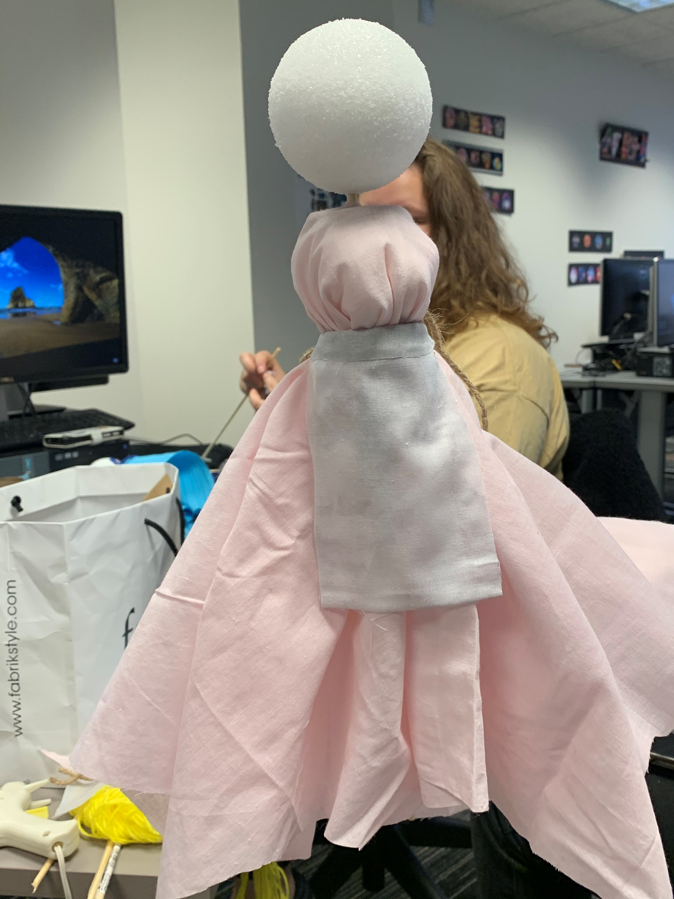
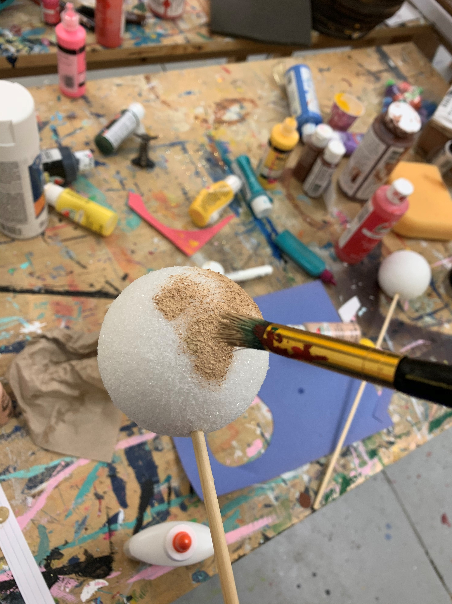
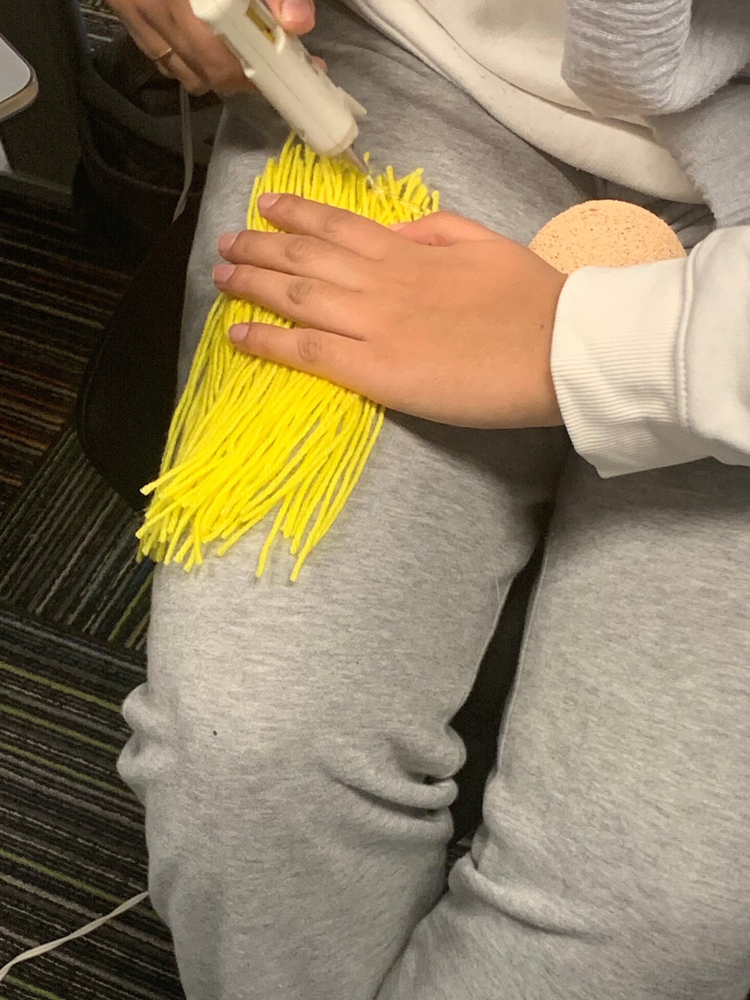
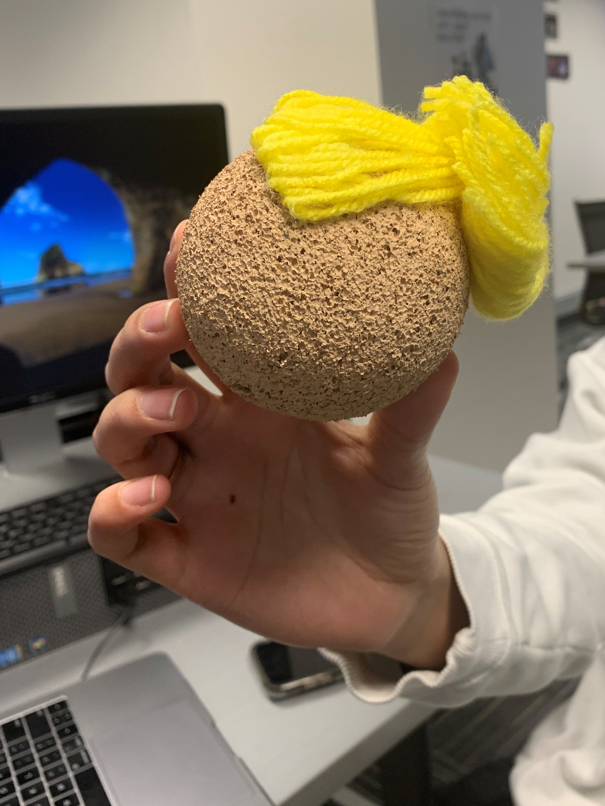
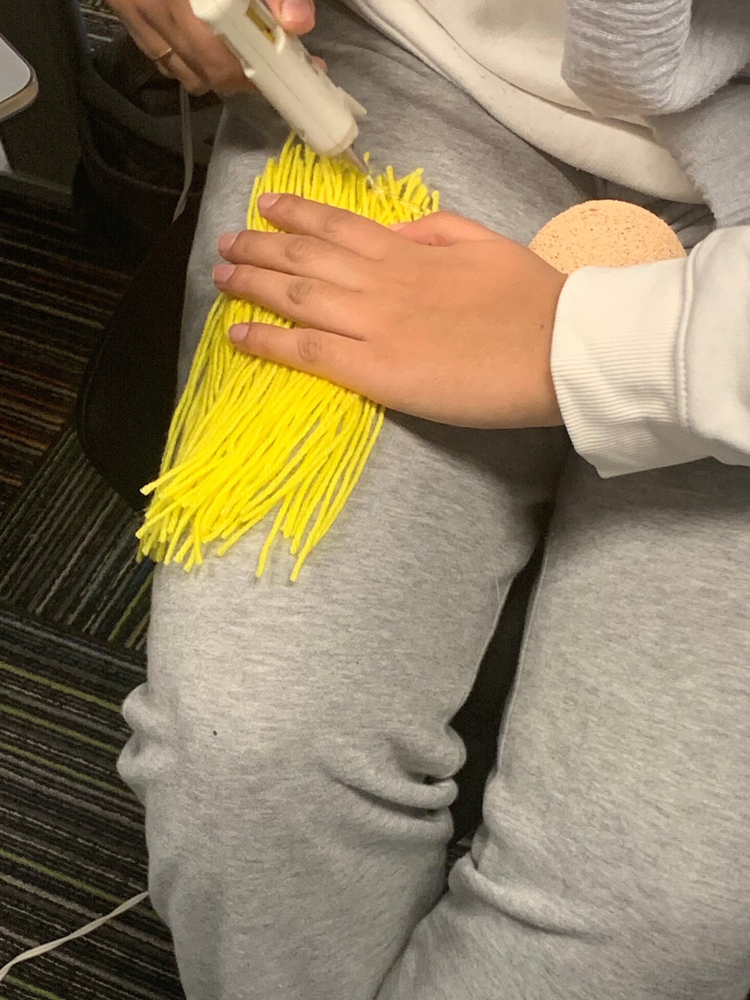
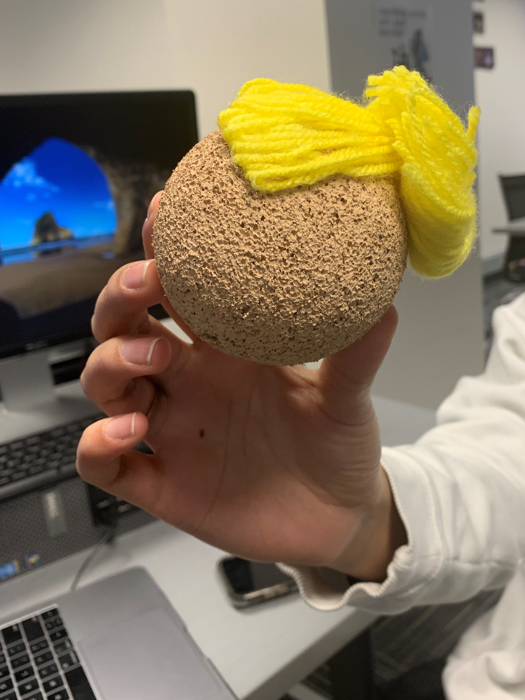

An example princess (Mulan) and an example choice
Example scene flow


Caption


Constructing our Cinderella Prototype
More Cinderella Construction

Caption
Caption

 



We used bright yellow yarn to add hair to the Cinderella puppets, using the classic updo on one.


Caption


Screenshots of the Instragram

An example poll
insert images of slide deck
Our way of creatively engaging with the design challenge